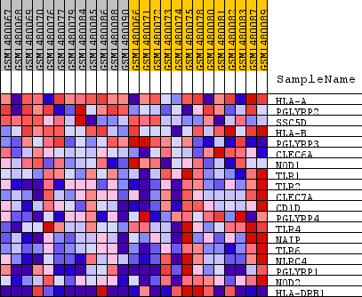
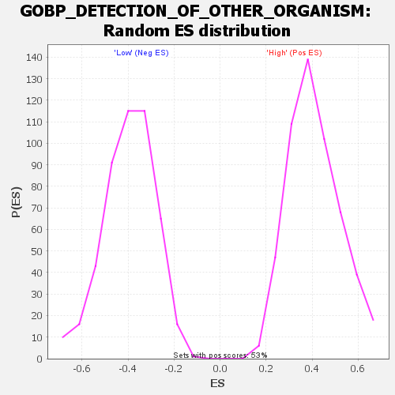

Profile of the Running ES Score & Positions of GeneSet Members on the Rank Ordered List
| Dataset | WG6v3.MRPL3.cls#High_versus_Low.MRPL3.cls#High_versus_Low_repos |
| Phenotype | MRPL3.cls#High_versus_Low_repos |
| Upregulated in class | Low |
| GeneSet | GOBP_DETECTION_OF_OTHER_ORGANISM |
| Enrichment Score (ES) | -0.7716055 |
| Normalized Enrichment Score (NES) | -1.962729 |
| Nominal p-value | 0.0 |
| FDR q-value | 0.01706367 |
| FWER p-Value | 0.137 |
| SYMBOL | TITLE | RANK IN GENE LIST | RANK METRIC SCORE | RUNNING ES | CORE ENRICHMENT | |
|---|---|---|---|---|---|---|
| 1 | HLA-A | HLA-A | 3593 | 0.034 | -0.1607 | No |
| 2 | PGLYRP2 | PGLYRP2 | 5913 | 0.014 | -0.2703 | No |
| 3 | SSC5D | SSC5D | 7181 | 0.007 | -0.3302 | No |
| 4 | HLA-B | HLA-B | 8787 | 0.001 | -0.4120 | No |
| 5 | PGLYRP3 | PGLYRP3 | 9088 | 0.000 | -0.4273 | No |
| 6 | CLEC6A | CLEC6A | 11604 | -0.009 | -0.5504 | No |
| 7 | NOD1 | NOD1 | 12277 | -0.012 | -0.5765 | No |
| 8 | TLR1 | TLR1 | 15837 | -0.039 | -0.7318 | Yes |
| 9 | TLR2 | TLR2 | 16374 | -0.046 | -0.7260 | Yes |
| 10 | CLEC7A | CLEC7A | 17260 | -0.060 | -0.7277 | Yes |
| 11 | CD1D | CD1D | 17644 | -0.068 | -0.6981 | Yes |
| 12 | PGLYRP4 | PGLYRP4 | 17930 | -0.076 | -0.6577 | Yes |
| 13 | TLR4 | TLR4 | 18004 | -0.078 | -0.6045 | Yes |
| 14 | NAIP | NAIP | 18461 | -0.096 | -0.5584 | Yes |
| 15 | TLR6 | TLR6 | 18565 | -0.101 | -0.4900 | Yes |
| 16 | NLRC4 | NLRC4 | 19013 | -0.136 | -0.4139 | Yes |
| 17 | PGLYRP1 | PGLYRP1 | 19175 | -0.157 | -0.3084 | Yes |
| 18 | NOD2 | NOD2 | 19177 | -0.157 | -0.1941 | Yes |
| 19 | HLA-DRB1 | HLA-DRB1 | 19416 | -0.284 | 0.0003 | Yes |

